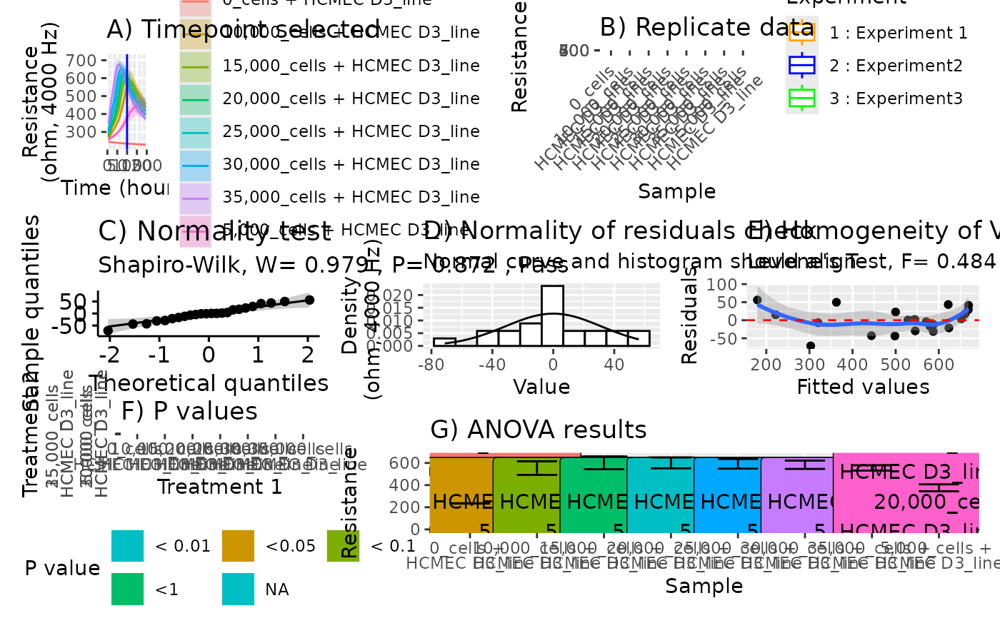

Make a display with all the ANOVA analysis pre-conducted
Source:R/vascr_anova.R
vascr_plot_anova.RdMake a display with all the ANOVA analysis pre-conducted
Usage
vascr_plot_anova(
data.df,
unit,
frequency,
time,
reference = NULL,
separate = "x",
rotate = 45
)Examples
vascr_plot_anova(data.df = growth.df, unit = "R", frequency = 4000, time = 100)
#> Warning: `fortify(<lm>)` was deprecated in ggplot2 3.6.0.
#> ℹ Please use `broom::augment(<lm>)` instead.
#> ℹ The deprecated feature was likely used in the ggplot2 package.
#> Please report the issue at <https://github.com/tidyverse/ggplot2/issues>.

# Run, comparing only to a reference
vascr_plot_anova(data.df = growth.df, unit = "R", frequency = 4000, time = 100,
reference = "5,000_cells + HCMEC D3_line")
#> Error in { subset_internal.df = rl %>% mutate(Time = as.numeric(as.character(Time))) %>% vascr_subset(time = t) fit <- lm(Value ~ Sample + Experiment, data = subset_internal.df) gmod = multcomp::glht(fit, linfct = multcomp::mcp(Sample = "Dunnett")) summ = summary(gmod, test = adjusted("none")) tr1 = tibble(Time_Sample = summ$test$sigma %>% names(), P = summ$test$pvalues %>% as.vector(), Time = unique(subset_internal.df$Time)) return(tr1)}: task 1 failed - "Variable(s) ‘Sample’ of class ‘character’ is/are not contained as a factor in ‘model’."